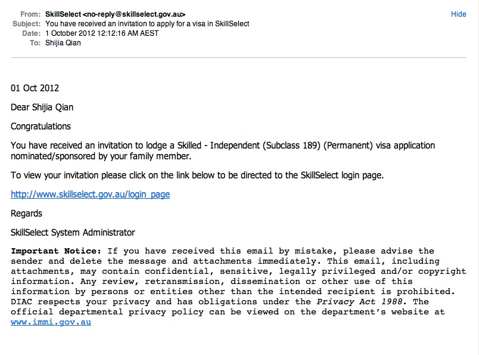

今天收到了EOI的邀请信，大家来一睹尊容吧：

简单的UIView Animation
好几天没更新了，最近一直在学iOS的Quartz2D以及Animation。今天就来分享一下我的学习成果，基于UIView的动画是最简单易学的，一般一天的学习就能作出非常漂亮的动画了。接下来正式开始今天的内容。
先来简单介绍一下今天要实现的效果，我们要让一个小瓢虫在屏幕上转圈，并且在每次拐弯的时候把头转向要拐过去的方向。

首先新建一个SingleView的工程。然后拖一个Button和一个UIImageView到MainStoryboard。然后在ViewController.h里添加一下代码。
@property (nonatomic, strong) UIImageView *bug;
@property (nonatomic, strong) IBOutlet UIButton *startBtn;
-(IBAction)startAnimation;
然后在MainStoryboard里把这两个属性和IBAction联接到相应的控件。
接着下来我们开始做动画。第一步，要让小瓢虫掉个头（转180度）,方法如下：
- (void)faceRight:(NSString *)animationID finished:(NSNumber *)finished context:(void *)context
{
[UIView beginAnimations:nil context:nil];
[UIView setAnimationDuration:1.0];//设置动画持续时间
[UIView setAnimationCurve:UIViewAnimationCurveEaseInOut];//设置动画的样式
[UIView setAnimationDelegate:self];//设置代理，只有设置了代理下面那个方法才能在动画结束时被调用
[UIView setAnimationDidStopSelector:@selector(moveRight:finished:context:)];//动画结束时调用moveRight方法
bug.transform = CGAffineTransformMakeRotation(M_PI);//通过对象的transform属性来设置动画，在这里我们要让对象旋转180度即一个PI
[UIView commitAnimations];//提交动画
}
怎么样，代码并不复杂吧。然后我们在IBAction里面添加
- (IBAction)startAnimation
{
[self faceRight:nil finished:nil context:nil];
}
运行工程，然后点击按钮测试一下效果。下一步，我们要让小虫从当前位置移动到屏幕的右边。
- (void)moveRight:(NSString *)animationID finished:(NSNumber *)finished context:(void *)context
{
[UIView beginAnimations:nil context:nil];
[UIView setAnimationDuration:2.0];
[UIView setAnimationCurve:UIViewAnimationCurveEaseInOut];
[UIView setAnimationDelegate:self];
[UIView setAnimationDidStopSelector:@selector(faceDown:finished:context:)];
bug.center = CGPointMake(260, bugCenter.y);//改变对象的位置，通过center属性来改变
[UIView commitAnimations];
}
这个方法也没什么好解释的。接下去的几个方法都是依样画葫芦：
- (void)faceDown:(NSString *)animationID finished:(NSNumber *)finished context:(void *)context
{
[UIView beginAnimations:nil context:nil];
[UIView setAnimationDuration:1.0];
[UIView setAnimationCurve:UIViewAnimationCurveEaseInOut];
[UIView setAnimationDelegate:self];
[UIView setAnimationDidStopSelector:@selector(moveDown:finished:context:)];
bug.transform = CGAffineTransformMakeRotation(-M_PI_2);
[UIView commitAnimations];
}
- (void)moveDown:(NSString *)animationID finished:(NSNumber *)finished context:(void *)context
{
[UIView beginAnimations:nil context:nil];
[UIView setAnimationDuration:2.0];
[UIView setAnimationCurve:UIViewAnimationCurveEaseInOut];
[UIView setAnimationDelegate:self];
[UIView setAnimationDidStopSelector:@selector(faceLeft:finished:context:)];
bug.center = CGPointMake(260, 97 + 200);
[UIView commitAnimations];
}
- (void)faceLeft:(NSString *)animationID finished:(NSNumber *)finished context:(void *)context
{
[UIView beginAnimations:nil context:nil];
[UIView setAnimationDuration:1.0];
[UIView setAnimationCurve:UIViewAnimationCurveEaseInOut];
[UIView setAnimationDelegate:self];
[UIView setAnimationDidStopSelector:@selector(moveLeft:finished:context:)];
bug.transform = CGAffineTransformMakeRotation(0);
[UIView commitAnimations];
}
- (void)moveLeft:(NSString *)animationID finished:(NSNumber *)finished context:(void *)context
{
[UIView beginAnimations:nil context:nil];
[UIView setAnimationDuration:2.0];
[UIView setAnimationCurve:UIViewAnimationCurveEaseInOut];
[UIView setAnimationDelegate:self];
[UIView setAnimationDidStopSelector:@selector(faceTop:finished:context:)];
bug.center = CGPointMake(bugCenter.x, 297);
[UIView commitAnimations];
}
- (void)faceTop:(NSString *)animationID finished:(NSNumber *)finished context:(void *)context
{
[UIView beginAnimations:nil context:nil];
[UIView setAnimationDuration:1.0];
[UIView setAnimationCurve:UIViewAnimationCurveEaseInOut];
[UIView setAnimationDelegate:self];
[UIView setAnimationDidStopSelector:@selector(moveTop:finished:context:)];
bug.transform = CGAffineTransformMakeRotation(M_PI_2);
[UIView commitAnimations];
}
- (void)moveTop:(NSString *)animationID finished:(NSNumber *)finished context:(void *)context
{
[UIView beginAnimations:nil context:nil];
[UIView setAnimationDuration:2.0];
[UIView setAnimationCurve:UIViewAnimationCurveEaseInOut];
[UIView setAnimationDelegate:self];
[UIView setAnimationDidStopSelector:@selector(faceRight:finished:context:)];
bug.center = bugCenter;
[UIView commitAnimations];
}
然后我们运行测试一下，我们会发现刚开始的掉头和移动到右边没什么问题但是后面一个转头朝下的动画就有问题。小虫子在转得的时候又会回到出发点。这是什么原因呢，我也是在这个问题上纠缠了好久，后来才发现虽然我们给小虫子设置了IBOutlet，但是我们并不能通过bug.center来得到小虫的位置（总是返回（0，0））。我觉得这可能是使用了MainStoryboard的问题（具体原因我还在搜索中），于是我就在ViewDidLoad里添加如下代码，手动给小虫子定位。
- (void)viewDidLoad
{
self.bug = [[UIImageView alloc] initWithImage:[UIImage imageNamed:@"bug.png"]];
self.bug.frame = CGRectMake(30,30, 90, 75);
[self.view addSubview:self.bug];
bugCenter = bug.center;
[super viewDidLoad];
}
然后再运行一下就没有什么问题了。总结一下，UIViewAnimation很简单易用。只要记住在[UIView beginAnimations:nil context:nil]和[UIView commitAnimations]之间添加配置代码以及动画代码就行了。最后祝大家都能作出漂亮的动画效果。
City随拍
今天去国家艺术馆看拿破仑时期的艺术品展览。发一些一路上拍的照片


圣保罗大教堂


世界上最高的居民住宅楼88层

墨尔本的母亲河，雅拉河畔
 国家艺术馆
国家艺术馆


CoreData学习笔记
最近一段时间一直忙着投简历，主要方向当然是iOS的开发。在看了不下30家的招聘公司的要求之后，发现很多都要求应聘者了解或者掌握CoreData。所以今天就来学习下CoreData基础。我会用一个简单的project来介绍CoreData的基础知识。废话不多说，现在开始。
CoreData是为开发者提供的一种简单稳定的数据存储和读取的接口。相比起sqlite 3，它能使代码更简洁，运行效率更高。我们今天做的这个项目很简单，就是有这么两张表，第一章表叫StudentInfo，包含了学生姓名，年龄，性别，以及住址。第二章表叫AddressDetails，包含了街道名，城市名，省，和邮编。应该有人已经能看出来，这张表就是对应着第一张表里的住址。所以这两张表是一对一的关系。好了，如果我们用数据库的话，第一步肯定就是建表啦，然后还要敲一大堆SQL代码。我最烦SQL代码，因为很容易打错，尤其是语句很长的时候。CoreData就很好的帮我们解决了这个问题。请看：
第一步还是新建工程，为了方便我们这里直接选择Master-Detail Applications。项目名称就叫StudentManagementSystem吧， Class Prefix输入SMS，然后device选iPhone。

注意下面的方框要勾选前面三个：Use Storyboards, Use Core Data, Use Automatic Reference Counting。

接下来我们要先对工程做一些修改。首先删除以下4个文件，直接选择move to trash：
- SMSMasterViewController.h
- SMSMasterViewController.m
- SMSDetailViewController.h
- SMSDetailViewController.m
然后新建一个文件叫SMSMasterViewController，subclass选择UITableViewController，注意下面两个选项都不要勾选，然后确定。

在SMSMasterViewController.h里添加一个属性：
@property (nanotomic,strong) NSManagedObjectContext *managedObjectContext;
并且在.m里synthesize这个属性。接下去到MainStoryboard里选中DetailViewController并按Delete键删除。
好了现在打开SMSAppDelegate.h文件我们先来熟悉一些概念。可以看到上面有三个属性，类名分别是：
- NSManagedObjectContext
- NSManagedObjectModel
- NSPersistentStoreCoordinator
简单介绍下这三个类是什么：
- NSManagedObjectContext：相当于一张便签纸，把我们从数据库获取的所有objects记录在上面。我们编程的时候和这个类的对象打的交道最多，因为我们必须通过它来进行数据的插入，删除和修改等操作。
- NSManagedObjectModel：顾名思义，它代表了数据库里存储的数据的结构。它定义了存储数据包含了哪些属性，以及与其他数据之间的关系。xCode提供了一种很方便的可视化操作来设置这些结构。
- NSPersistentStoreCoordinator：它负责建立与数据库的联接。
我们下面就来看看xCode提供给我们的可视化编辑器，用来方便快捷的编辑我们想要的NSManagedObjectModel。在左边的工程目录里找到StudentManagementSystem.xcdatamodeld，点击它，并且在左下角的Editor Style里选到右边的那个选项。

我们先点选可视化编辑框里的那个已经存在的Entity，然后把它删掉。接下去我们一步步来添加一个Entity。点击Add Entity，然后命名为StudentInfo。

我们可以看到它包含了attributes和relationship两栏。接下来我们给它添加attributes，在图形化界面中选中这个Entity并且点击Add Attribute不放，在弹出菜单里选择Add Attribute。
 然后在图形界面里选中我们刚创建的Attribute，在右边的编辑区域里把Name改成name，把Attribute Type改成string。接着用同样的方法创建age和gender，注意age的type我们用Integer32。
然后在图形界面里选中我们刚创建的Attribute，在右边的编辑区域里把Name改成name，把Attribute Type改成string。接着用同样的方法创建age和gender，注意age的type我们用Integer32。

属性添加完毕后，接着依样画葫芦把另一个Entity，AddressDetails也创建好。完成后屏幕上应该是这样：

开头我们就说了，这两个entity（表）之间是一对一的关系，接下来我们就来创建这种关系。选中StudentInfo，点击Add Attribute不放，在弹出菜单里选择Add Relationship。把这个relationship改名为address，并且Destination选择AddressDetails。然后，因为苹果建议我们每当创建一个relationship的同时创建一个反向的relationship。选中AddressDetails添加Relationship改名为studentinfo，destination为StudentInfo，然后Inverse选择我们刚创建的address。完成后界面就是这样的：

下面一步，我们从测试中来学习CoreData的工作机制。首先我们添加几条数据，在AppDelegate里的application:didFinishLaunchingWithOptions方法里添加如下代码：
NSManagedObjectContext *context = self.managedObjectContext;
//创建NSManagedObject对象指向StudentInfo这个Entity，并设置Value。
NSManagedObject *studentInfo = [NSEntityDescription insertNewObjectForEntityForName:@"StudentInfo" inManagedObjectContext:context];
[studentInfo setValue:@"Eric" forKey:@"name"];
[studentInfo setValue:[NSNumber numberWithInt:25] forKey:@"age"];
[studentInfo setValue:@"male" forKey:@"gender"];
//创建NSManagedObject对象指向AddressDetails这个Entity，并设置Value。
NSManagedObject *addressDetails = [NSEntityDescription insertNewObjectForEntityForName:@"AddressDetails" inManagedObjectContext:context];
[addressDetails setValue:@"507/909 Swanston St." forKey:@"street"];
[addressDetails setValue:@"Melbourne" forKey:@"city"];
[addressDetails setValue:@"Victoria" forKey:@"state"];
[addressDetails setValue:[NSNumber numberWithInt:3053] forKey:@"zip"];
//添加两个对象之间的关系
[studentInfo setValue:addressDetails forKey:@"address"];
[addressDetails setValue:studentInfo forKey:@"studentinfo"];
//保存所创建的对象
NSError *error;
if(![context save:&error])
{
NSLog(@"Couldn't save: %@", [error localizedDescription]);
}
然后紧接着我们来测试一下是否能获取到刚才添加的这些值。接着刚才的代码往下写：
NSFetchRequest *fetechRequest = [[NSFetchRequest alloc] init];
NSEntityDescription *entity = [NSEntityDescription entityForName:@"StudentInfo" inManagedObjectContext:context];
[fetechRequest setEntity:entity];
NSArray *fetechedResults = [context executeFetchRequest:fetechRequest error:&error];
for(NSManagedObject *stuInfo in fetechedResults)
{
NSLog(@"Name:%@", [stuInfo valueForKey:@"name"]);
NSLog(@"age:%@", [stuInfo valueForKey:@"age"]);
NSManagedObject *address = [stuInfo valueForKey:@"address"];
NSLog(@"City:%@", [address valueForKey:@"city"]);
NSLog(@"Zip:%@", [address valueForKey:@"zip"]);
}
阅读上面的代码我们可以发现，我们不仅能获取到StudentInfo这个Entity里的值还能通过我们刚才创建的relationship，获取AddressDetails这个Entity，非常的方便。接下来我们运行一下看看结果，注意这时候模拟器上不会有任何的显示，我们要看Log里的输出。OK，结果正确。

到目前为止，我们用的都是NSManagedObject的对象来描述我们的Entity，其实还有一个更好的办法就是为每个Entity创建Model。xCode同样提供了非常方便的方法来达到这个目的。回到StudentManagementSystem.xcdatamodeld，选中StudentInfo这个Entity然后在顶上的菜单栏里选择File->New File->Core Data->NSManagedObject subclass。然后确定，xCode就为我们创建好了一个Model。重复同样的步骤为AddressInfo也创建Model。

接下来找到StudentInfo.h我们发现里面有个property还是NSManagedObject对象，这是因为我们在创建StudentInfo这个Model的时候AddressDetails这个Model还不存在，所以系统不知道它的类型，只能把它归为NSManagedObject的对象。很简单，我们重新创建一个StudentInfo的Model并且覆盖原来的就可以了。
接下来我们把刚才上面贴的两段代码改成下面的：
NSManagedObjectContext *context = self.managedObjectContext;
//创建NSManagedObject对象指向StudentInfo这个Entity，并设置Value。
StudentInfo *studentInfo = [NSEntityDescription insertNewObjectForEntityForName:@"StudentInfo" inManagedObjectContext:context];
studentInfo.name = @"Eric";
studentInfo.age = [NSNumber numberWithInt:25];
studentInfo.gender = @"male";
//创建NSManagedObject对象指向AddressDetails这个Entity，并设置Value。
AddressDetails *addressDetails = [NSEntityDescription insertNewObjectForEntityForName:@"AddressDetails" inManagedObjectContext:context];
addressDetails.street = @"507/909 Swanston St.";
addressDetails.city = @"Melbourne";
addressDetails.state = @"Victoria";
addressDetails.zip = [NSNumber numberWithInt:3053];
//添加两个对象之间的关系
studentInfo.address = addressDetails;
addressDetails.studentinfo = studentInfo;
//保存所创建的对象
NSError *error;
if(![context save:&error])
{
NSLog(@"Couldn't save: %@", [error localizedDescription]);
}
NSFetchRequest *fetechRequest = [[NSFetchRequest alloc] init];
NSEntityDescription *entity = [NSEntityDescription entityForName:@"StudentInfo" inManagedObjectContext:context];
[fetechRequest setEntity:entity];
NSArray *fetechedResults = [context executeFetchRequest:fetechRequest error:&error];
for(StudentInfo *stuInfo in fetechedResults)
{
NSLog(@"Name:%@", stuInfo.name);
NSLog(@"age:%@", stuInfo.age);
AddressDetails *address = studentInfo.address;
NSLog(@"City:%@", address.city);
NSLog(@"Zip:%@", address.zip);
}
接着运行下看看结果：

OK，两条输出，没有任何问题。接下来大家可以自己添加一个TableView的输出把数据库里的数据逐条显示在TableView里，这里我就不做了。今天的学习到此结束。
不平凡的一天
今天一大早7点不到就起来，吃完早饭就出发。还好家里住的地段好，直接火车坐到sourthern cross然后坐skybus到机场。结果坑爹的事情来了，我订的10点航班取消了（发誓以后再也不坐Tiger的航班了，乘客少就取消），心里一阵紧张，还好后面的那一班航班有位置。然后立马要求给我改到11点50分那一班。时间算算非常紧张，在机场里一直坐立不安。结果飞机还晚点起飞，出了机场已经1点20分了，还有40分钟就要面试了。赶快出了机场就冲向火车站，到了面试的地方正好2点钟。面试过程很简单，就做一份卷子5道题，三道概念两道编程。概念题都是直接现场Google的，编程题就不说了，没啥大问题。做完后，公司的人问了我的期望薪水以及什么时候乐意开始工作，然后就说两天内就能给我答复。出来后感觉很不错，看他们的态度似乎对我挺感兴趣，哈哈。今天算是人生中的一个里程碑吧，就发张我在悉尼街头随手拍的“里程碑”。

简单的iPhone画板应用
前天用HTML5和JS做了一个简单的网页版的画图程序，作为一个初级的iOS开发人员（自封的）今天就来实现iPhone上的简单画板应用。
第一步，打开xCode然后新建工程，这次我们选择SingleView Application模版，然后记得把Use Storyboards和Use Automatic Reference Counting两个选项勾上。

工程新建完毕后，接下来打开Mainstoryboard。然后从右下角的控件栏里连续拖两个UIImageView放到View Controller里，大小设置成全屏。接着把底下的ImageView的名字改成Main ImageView，上面的ImageView名字改成Drawing ImageView以便区分。这里稍稍解释一下这两个ImageView的作用。Drawing ImageView是用来接受用户每一次在屏幕上的“输入”的（手指的滑动）。从用户点击屏幕开始到手指离开屏幕，这样就算是一次“输入”。然后这次“输入”的“内容”就会被画到下面那个Main ImageView上。所以下面的Main ImageView才是真正用来保存用户所画的东西的。

然后到ViewController.h里建立两个UIImageView的IBOutlet，并在Mainstoryboard里把这两个Outlet和刚才添加的两个UIImageView联接起来。
接下来第二步，我们开始设计主界面。我是这么设计的，所有的按钮都放置在屏幕底部，主要有这四个按钮：清除按钮–用来清楚之前画的所有内容，保存按钮–用来保存所画的图片，橡皮按钮，线条粗细选择按钮和颜色选择按钮。我把我用的图片素材都打包了，大家可以直接下载来用。下面是我自己设计的界面以供参考，其中颜色选择和线条粗细选择按钮点击以后会弹出两个菜单供用户选择，实现方法后面介绍。


下面介绍弹出菜单的实现方法。我的实现方法是新建一个UIView然后把菜单里所有的Button添加到这个View里，然后再用addSubview把这个UIView添加到主界面。在这里我用了一个NSMutableDictionary–popoverDictionay来保存建好的UIView，这样每次我们点击按钮就不用重复建立UIView了。

接下来建立两个IBOutlet的UIButton连接到颜色选择和线条选择两个按钮，并建立两个IBAction然后联接到这两个按钮的TouchUpInside事件。下面的代码就是颜色选择按钮点击后的代码，线条按钮的代码类似。


然后我们要给每个按钮添加点击事件。

每次我们点击弹出菜单的按钮时要做如下操作：（1）设置相关的参数，比如R,G,B的值，线条粗细的值；(2)把菜单按钮的背景改成我们刚选择的按钮的背景。所以我们首先要声明一些成员变量并且在ViewDidLoad里初始化：


接下来是按钮点击的方法实现：
- (void)colorPressed:(id)sender
{
UIButton *btn = (UIButton *)sender;
switch (btn.tag)
{
case 0:
red = 255.0 / 255.0;
green = 0.0 / 255.0;
blue = 0.0 / 255.0;
[self.colorPickBtn setBackgroundImage:[btn backgroundImageForState:UIControlStateNormal] forState:UIControlStateNormal];
break;
case 1:
red = 0.0 / 255.0;
green = 255.0 / 255.0;
blue = 0.0 / 255.0;
[self.colorPickBtn setBackgroundImage:[btn backgroundImageForState:UIControlStateNormal] forState:UIControlStateNormal];
break;
case 2:
red = 0.0 / 255.0;
green = 0.0 / 255.0;
blue = 255.0 / 255.0;
[self.colorPickBtn setBackgroundImage:[btn backgroundImageForState:UIControlStateNormal] forState:UIControlStateNormal];
break;
case 3:
red = 255.0 / 255.0;
green = 0.0 / 255.0;
blue = 255.0 / 255.0;
[self.colorPickBtn setBackgroundImage:[btn backgroundImageForState:UIControlStateNormal] forState:UIControlStateNormal];
break;
case 4:
red = 255.0 / 255.0;
green = 255.0 / 255.0;
blue = 0.0 / 255.0;
[self.colorPickBtn setBackgroundImage:[btn backgroundImageForState:UIControlStateNormal] forState:UIControlStateNormal];
break;
case 5:
red = 0.0 / 255.0;
green = 255.0 / 255.0;
blue = 255.0 / 255.0;
[self.colorPickBtn setBackgroundImage:[btn backgroundImageForState:UIControlStateNormal] forState:UIControlStateNormal];
break;
case 6:
red = 0.0 / 255.0;
green = 0.0 / 255.0;
blue = 0.0 / 255.0;
[self.colorPickBtn setBackgroundImage:[btn backgroundImageForState:UIControlStateNormal] forState:UIControlStateNormal];
break;
}
[self.eraserBtn setBackgroundImage:[UIImage imageNamed:@"eraser.png"] forState:UIControlStateNormal];
[self.viewThatPoped removeFromSuperview];
self.viewThatPoped = nil;
}
线条粗细按钮的实现方法类似：
- (void)brushPressed:(id)sender
{
UIButton *btn = (UIButton *)sender;
switch (btn.tag)
{
case 0:
brush = 5.0;
[self.brushPickBtn setBackgroundImage:[btn backgroundImageForState:UIControlStateNormal] forState:UIControlStateNormal];
break;
case 1:
brush = 10.0;
[self.brushPickBtn setBackgroundImage:[btn backgroundImageForState:UIControlStateNormal] forState:UIControlStateNormal];
case 2:
brush = 15.0;
[self.brushPickBtn setBackgroundImage:[btn backgroundImageForState:UIControlStateNormal] forState:UIControlStateNormal];
case 3:
brush = 20.0;
[self.brushPickBtn setBackgroundImage:[btn backgroundImageForState:UIControlStateNormal] forState:UIControlStateNormal];
}
[self.viewThatPoped removeFromSuperview];
self.viewThatPoped = nil;
}
接下来我们可以简单的测试一下，没问题的话我们进入下一步，也是最重要的一步，在屏幕上实现绘画功能。在我们的代码里添加一下三个方法：
- (void)touchesBegan:(NSSet *)touches withEvent:(UIEvent *)event
{
}
- (void)touchesMoved:(NSSet *)touches withEvent:(UIEvent *)event
{
}
- (void)touchesEnded:(NSSet *)touches withEvent:(UIEvent *)event
{
}
从这三个方法的名字上就能看出来是干什么用的，第一个是当手指触到屏幕是调用，第二个方法是手指在屏幕是移动时调用，第三个是当手指抬起时调用。下面我们把具体的代码加到这三个方法里去（代码中已经添加了详细的注释）：
- (void)touchesBegan:(NSSet *)touches withEvent:(UIEvent *)event
{
fingerMoved = NO;
//通过传进来的touches参数获得一个touch对象，然后通过该对象获得我们touch的坐标
UITouch *touch = [touches anyObject];
lastPoint = [touch locationInView:self.view];
}
- (void)touchesMoved:(NSSet *)touches withEvent:(UIEvent *)event
{
//如果当前有弹出菜单，则不进行绘画操作
if(self.viewThatPoped)
{
return;
}
fingerMoved = YES;
//获取手指移动后的坐标
UITouch *touch = [touches anyObject];
CGPoint currentPoint = [touch locationInView:self.view];
//开始绘画
//首先获得当前的ImageContext，就是所谓的上下文
UIGraphicsBeginImageContext(self.view.frame.size);
//设定绘画的区域，这里是整个屏幕
[self.drawingImage.image drawInRect:CGRectMake(0, 0, self.view.frame.size.width, self.view.frame.size.height)];
//和HTML5中的canvas绘画类似，先移动到lastpoint
CGContextMoveToPoint(UIGraphicsGetCurrentContext(), lastPoint.x, lastPoint.y);
//然后在lastpoint和currentpoint之间画线
CGContextAddLineToPoint(UIGraphicsGetCurrentContext(), currentPoint.x, currentPoint.y);
//设置线的两头的Style，这里设置的是Round，这样会比较好看，我们画出的线条两头都是圆的
CGContextSetLineCap(UIGraphicsGetCurrentContext(), kCGLineCapRound);
//设置线条的宽度，通过参数读取
CGContextSetLineWidth(UIGraphicsGetCurrentContext(), brush);
//设置线条的颜色
CGContextSetRGBStrokeColor(UIGraphicsGetCurrentContext(), red, green, blue, 1.0);
CGContextSetBlendMode(UIGraphicsGetCurrentContext(),kCGBlendModeNormal);
//画出线条
CGContextStrokePath(UIGraphicsGetCurrentContext());
//从当前的上下文里获取图像，并设置到drawingImage上
self.drawingImage.image = UIGraphicsGetImageFromCurrentImageContext();
[self.drawingImage setAlpha:opacity];
//结束绘画
UIGraphicsEndImageContext();
//把lastpoint设置成curentpoint，意味着下次绘画从currentpoint开始
lastPoint = currentPoint;
}
- (void)touchesEnded:(NSSet *)touches withEvent:(UIEvent *)event
{
//如果当前有弹出菜单，则remove掉弹出菜单
if(self.viewThatPoped)
{
[self.viewThatPoped removeFromSuperview];
self.viewThatPoped = nil;
return;
}
//如果手指没有移动，那就画一个点
if(!fingerMoved) {
UIGraphicsBeginImageContext(self.view.frame.size);
[self.drawingImage.image drawInRect:CGRectMake(0, 0, self.view.frame.size.width, self.view.frame.size.height)];
CGContextSetLineCap(UIGraphicsGetCurrentContext(), kCGLineCapRound);
CGContextSetLineWidth(UIGraphicsGetCurrentContext(), brush);
CGContextSetRGBStrokeColor(UIGraphicsGetCurrentContext(), red, green, blue, opacity);
CGContextMoveToPoint(UIGraphicsGetCurrentContext(), lastPoint.x, lastPoint.y);
CGContextAddLineToPoint(UIGraphicsGetCurrentContext(), lastPoint.x, lastPoint.y);
CGContextStrokePath(UIGraphicsGetCurrentContext());
CGContextFlush(UIGraphicsGetCurrentContext());
self.drawingImage.image = UIGraphicsGetImageFromCurrentImageContext();
UIGraphicsEndImageContext();
}
//讲drawingImage的内容保存到我们的MainImage里，然后清空drawingImage
UIGraphicsBeginImageContext(self.mainImage.frame.size);
[self.mainImage.image drawInRect:CGRectMake(0, 0, self.view.frame.size.width, self.view.frame.size.height) blendMode:kCGBlendModeNormal alpha:1.0];
[self.drawingImage.image drawInRect:CGRectMake(0, 0, self.view.frame.size.width, self.view.frame.size.height) blendMode:kCGBlendModeNormal alpha:opacity];
self.mainImage.image = UIGraphicsGetImageFromCurrentImageContext();
self.drawingImage.image = nil;
UIGraphicsEndImageContext();
}
接下来我们测试一下效果：

下面我们来添加剩下的功能。
橡皮功能，很简单，其实就是把当前的颜色设置为白色，R,G,B都设置为255就可以了；
-(IBAction)eraserPressed
{
red = 255.0 / 255.0;
green = 255.0 / 255.0;
blue = 255.0 / 255.0;
[self.eraserBtn setBackgroundImage:[UIImage imageNamed:@"eraserpressed.png"] forState:UIControlStateNormal];
}
清除所有绘画的功能，也相当的简单，我们使用了一个UIAlertView来让用户确认是否要清楚所有的绘画内容：
- (IBAction)clearBtnPressed
{
UIAlertView *alert = [[UIAlertView alloc] initWithTitle:@"" message:@"Are you sure to clear all the drawings?" delegate:self cancelButtonTitle:@"NO" otherButtonTitles:@"YES", nil];
[alert show];
}
//AlertView的delegate方法
- (void)alertView:(UIAlertView *)alertView clickedButtonAtIndex:(NSInteger)buttonIndex
{
if (buttonIndex == 1)
{
//直接设置成nil就可以
self.mainImage.image = nil;
}
}
最后一个保存到相册的功能，我们使用了UIActionSheet，来让用户确认，并且在保存成功后回调一个函数来告知用户保存成功：
- (IBAction)saveBtnPressed
{
UIActionSheet *actionSheet = [[UIActionSheet alloc] initWithTitle:@""
delegate:self
cancelButtonTitle:@"Cancel"
destructiveButtonTitle:nil
otherButtonTitles:@"Save to Camera Roll", nil];
[actionSheet showInView:self.view];
}
//actionsheet的delegate方法
- (void)actionSheet:(UIActionSheet *)actionSheet clickedButtonAtIndex:(NSInteger)buttonIndex
{
if (buttonIndex == 0)
{
UIGraphicsBeginImageContextWithOptions(_mainImage.bounds.size, NO,0.0);
[_mainImage.image drawInRect:CGRectMake(0, 0, _mainImage.frame.size.width, _mainImage.frame.size.height)];
UIImage *SaveImage = UIGraphicsGetImageFromCurrentImageContext();
UIGraphicsEndImageContext();
UIImageWriteToSavedPhotosAlbum(SaveImage, self,@selector(image:didFinishSavingWithError:contextInfo:), nil);
}
}
//保存完毕后的回调函数
- (void)image:(UIImage *)image didFinishSavingWithError:(NSError *)error contextInfo:(void *)contextInfo
{
if (error != NULL)
{
UIAlertView *alert = [[UIAlertView alloc] initWithTitle:@"Error" message:@"Image could not be saved.Please try again" delegate:nil cancelButtonTitle:nil otherButtonTitles:@"Close", nil];
[alert show];
} else {
UIAlertView *alert = [[UIAlertView alloc] initWithTitle:@"Success" message:@"Image was successfully saved in photoalbum!" delegate:nil cancelButtonTitle:nil otherButtonTitles:@"Close", nil];
[alert show];
}
}
接下来我们最后测试一下看看是不是所有的功能都能不出错。如果不出错的话，恭喜，一个简单的iPhone画板应用完成了。 这是整个项目的代码，有需要的请自行下载。
维多利亚州立图书馆
下午去超市，顺路去了州立图书馆晃了一圈。


这是整个图书馆的中心，一个超级大的大厅


墨尔本博物馆
在刮了两天风下了两天雨之后，今天终于放晴了，就想着不能老这么在家呆着啊，应该走出去晃晃。于是上Google Map搜看看附近有没有什么好玩的地方。不搜不知道，果然隔着两条街就是墨尔本博物馆。这还等什么，吃完中饭马上动身。博物馆坐落在一个很大的公园里，对面就是展览中心，直接上图吧。


这是博物馆对面的展览中心，看介绍是德国人在1880年墨尔本世博会的时候造的，相当于那个时候的德国馆。但我总觉得这个展览中心看起来象清真寺：


 进了博物馆发现正好有个关于美索不达米亚文明的展览，二话不说就买了联票。展览的第一部分就说美索不达米亚平原是文字的发源地，最早能追溯到公元前3500年。中华文明是5000年也就是差不多公元前3000年，那看来确实是他们早。当时的人们虽然刚发明了文字，但是主要的记事方法还是图画，刻在石头上的图画。还真是不得不佩服古文明，5500年前就能在巨大的石板上刻画，还能刻地那么精细。其中最令我震撼的是汉默拉比法典，因为很早就在周杰伦的爱在西元前里听到过。亲眼一看确实NB，一个黑黑的大概两米高的石柱上刻满了当时的文字，然后在石柱顶端是上帝和当时的帝王。介绍上说这个法典大部分条款是遵循一个原则来编写的，就是以牙还牙，以眼还眼。接下来的巴比伦文明展纠正了我犯了20多年的错误，我一直以为咱们的万里长城是世界7大奇迹之一。今天才知道，世界7大奇迹其实早在公元前1000多年的时候就被一个古埃及的学者提出来，所以只包括了当时两河流域的一些宏伟的建筑，就算在那个年代长城早就早好了人家古埃及人也不可能知道。整个展览我都认认真真的看完，确实不错。可惜不准照相，因为很多展品都是真品，平时看不到的。
接下去的现代馆就没什么好说的了，看照片吧。
进了博物馆发现正好有个关于美索不达米亚文明的展览，二话不说就买了联票。展览的第一部分就说美索不达米亚平原是文字的发源地，最早能追溯到公元前3500年。中华文明是5000年也就是差不多公元前3000年，那看来确实是他们早。当时的人们虽然刚发明了文字，但是主要的记事方法还是图画，刻在石头上的图画。还真是不得不佩服古文明，5500年前就能在巨大的石板上刻画，还能刻地那么精细。其中最令我震撼的是汉默拉比法典，因为很早就在周杰伦的爱在西元前里听到过。亲眼一看确实NB，一个黑黑的大概两米高的石柱上刻满了当时的文字，然后在石柱顶端是上帝和当时的帝王。介绍上说这个法典大部分条款是遵循一个原则来编写的，就是以牙还牙，以眼还眼。接下来的巴比伦文明展纠正了我犯了20多年的错误，我一直以为咱们的万里长城是世界7大奇迹之一。今天才知道，世界7大奇迹其实早在公元前1000多年的时候就被一个古埃及的学者提出来，所以只包括了当时两河流域的一些宏伟的建筑，就算在那个年代长城早就早好了人家古埃及人也不可能知道。整个展览我都认认真真的看完，确实不错。可惜不准照相，因为很多展品都是真品，平时看不到的。
接下去的现代馆就没什么好说的了，看照片吧。


接下来是我个人最喜欢的展品，澳洲第一台计算机，也是目前世界上唯一的还能正常运行的第一代计算机。这台计算机叫CSIRAC，建于1949年，1967年退役，占地40平方米相当霸气。运算速度不及现在的普通家庭计算机的百万分之一。


用HTML5做了一个简单的画板
感觉死盯着手机开发貌似在澳洲的机会并不多，澳洲最多的还是WEB开发。所以今天就心血来潮的用HTML5现学现卖做了个非常简单的画板，程序写的很简陋也很乱，大家将就着看吧。
给博客添加新浪微博侧边栏
今天闲得无聊，就想把博客的内容弄得再丰富一点。Octopress已经提供了丰富的侧边栏widget，比如Twitter，Google Plus，GitHub Repo等等，只需要在config.yml里配置一下用户名就可以了。但是考虑到天朝强大的防火墙的存在，所以我准备把新浪微博的侧边栏给添加进来。
新浪微博已经提供了可以定制的微博侧边栏叫微博秀，这个工具就能够帮我们直接生成一个微博的侧边栏，非常方便。系统会自动给我们生成一个iframe，接下来我们就要把这个iframe添加到我们的博客侧边栏中去。
首先，在博客所处的本地文件夹中找到source/includes/asides，在这个文件夹下建立weibo.html。用编辑器打开这个文件，然后输入：
其中iframe那块代码就是刚才微博秀给我们生成的代码，不过为了能更方便地通过config.yml来配置，我们用一些变量来替代了原有的值。然后到config.yml中添加如下配置：
# Sina Weibo
# 微博uid和verifier，可以在iframe中的src参数里找到
weibo_uid: 2277930531
weibo_verifier: c773826d
# 显示粉丝的行数：1-7行
weibo_fansrow: 1
# 是否显示缩略图
weibo_picshow: true
# 配色方案：新浪提供了1-10种不同的配色方案
weibo_skin: 2
# 是否显示微博内容
weibo_showcontent: true
# 是否在底部显示粉丝栏
weibo_showfans: false
好了接下来只要generate然后deploy就可以了。